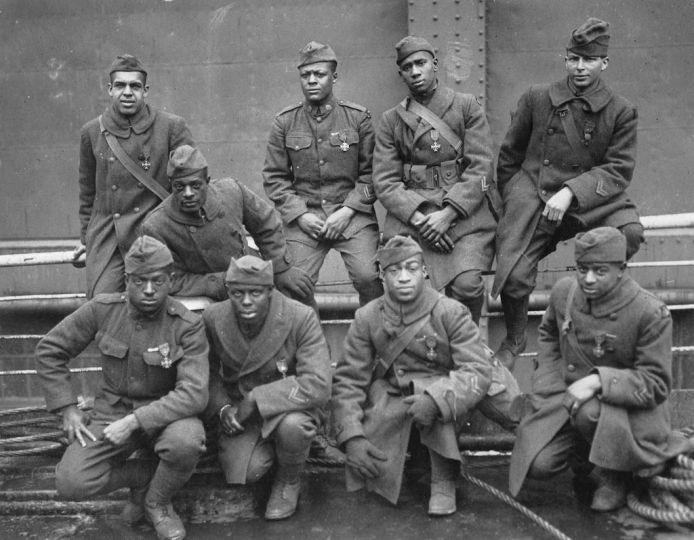
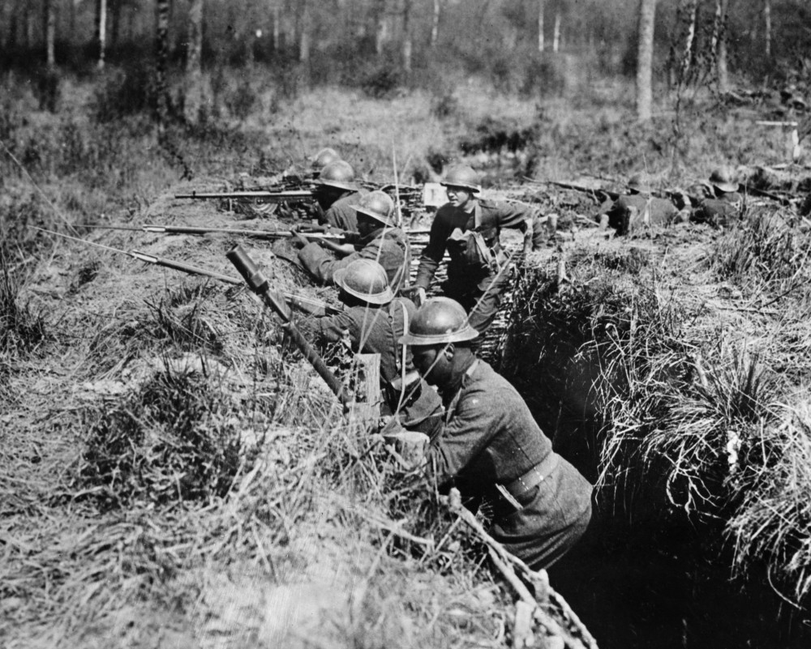

Buffalo Soldiers & Harlem Hellfighters
L'armée américaine de 1918 est ségréguée. Les soldats noirs servent dans des régiments séparés — et souvent, parce que le commandement américain ne voulait pas les intégrer dans les unités blanches, ils sont affectés aux armées françaises qui les accueillent sans discrimination.
Sur le secteur de Jaulgonne, Franquets Farm et la zone de Château-Thierry, des unités de soldats noirs américains combattent sous commandement français. Ils font preuve du même courage que leurs camarades blancs — pour une démocratie qui leur refuse encore, dans leur propre pays, les droits civiques élémentaires.
Le 369e Régiment — « Harlem Hellfighters »
Affecté à la 161e Division d'Infanterie française, le 369e RI US combat dans le secteur de Champagne-Marne. Jamais un seul homme ne fut capturé. Jamais une position ne fut abandonnée. L'ensemble du régiment reçut la Croix de Guerre française. 171 membres furent cités individuellement. Le sergent Henry Johnson et le soldat Needham Roberts furent les premiers Américains de la Grande Guerre à recevoir la Croix de Guerre — après avoir repoussé seuls une patrouille allemande de vingt hommes à la baïonnette.
Le 92e Corps d'Armée — « Buffalo Soldiers »
Environ 380 000 Noirs américains servent dans la Grande Guerre — dont 200 000 en France. L'armée américaine étant ségréguée, le Général Pershing affecte la plupart des régiments noirs aux armées françaises, qui les intègrent sans discrimination. Les soldats noirs reçoivent les mêmes rations, les mêmes médailles, le même commandement que les Français. De retour aux États-Unis, ils seront accueillis par les lois Jim Crow — et pour beaucoup, par les émeutes raciales de l'Été rouge de 1919.
« Les soldats noirs ont combattu pour la liberté en France. Ils sont rentrés dans leur propre pays et ont constaté que la liberté n'y existait pas. » — W.E.B. Du Bois, The Crisis, 1919



Soldats américains à Jaulgonne — 24 juillet 1918 et 21 août 1918. Ces hommes — blancs et noirs — ont combattu côte à côte sur la Marne.